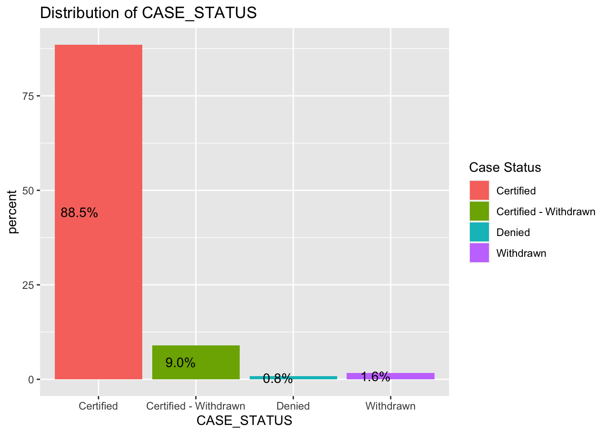
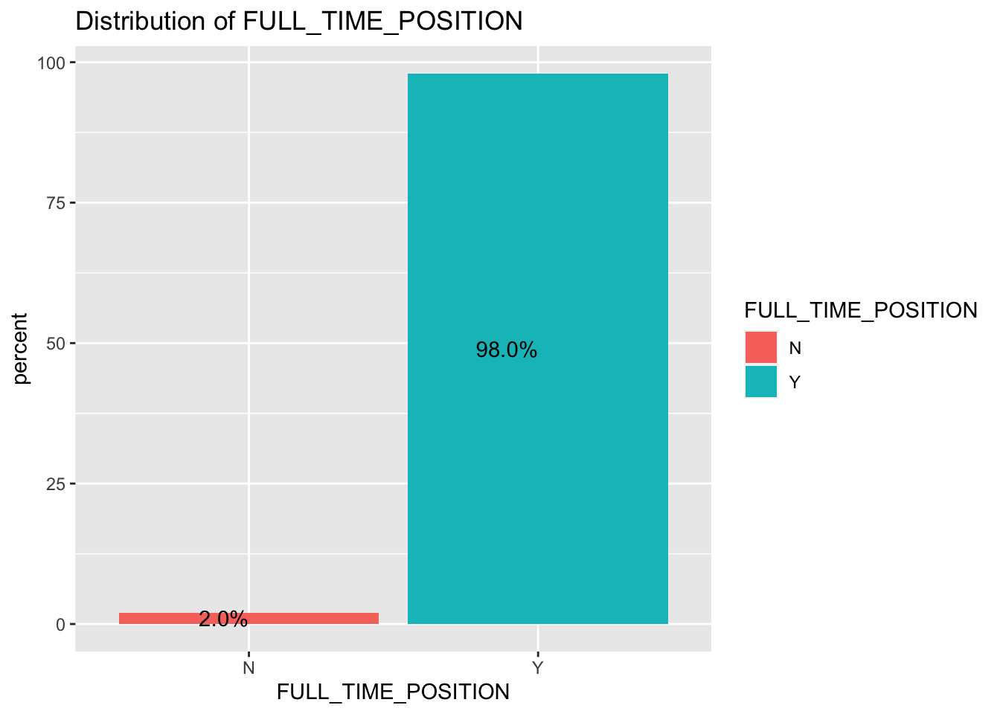
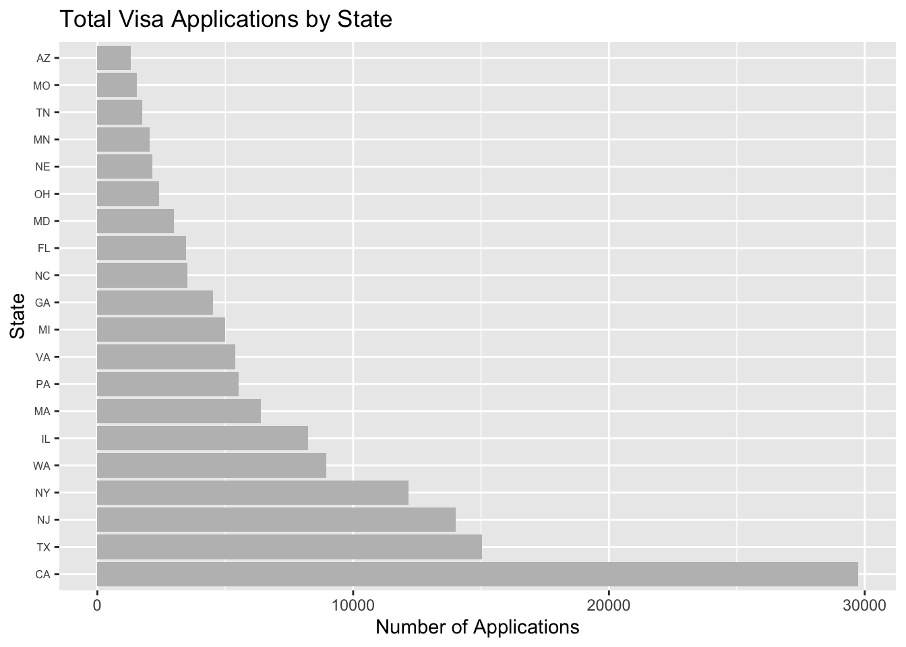
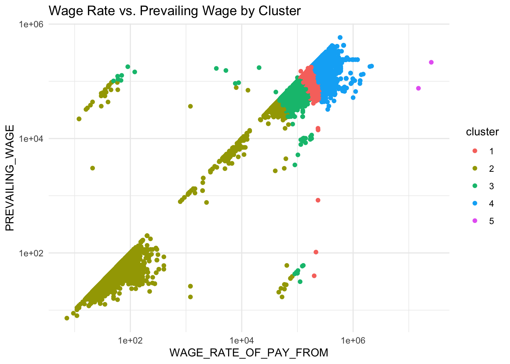
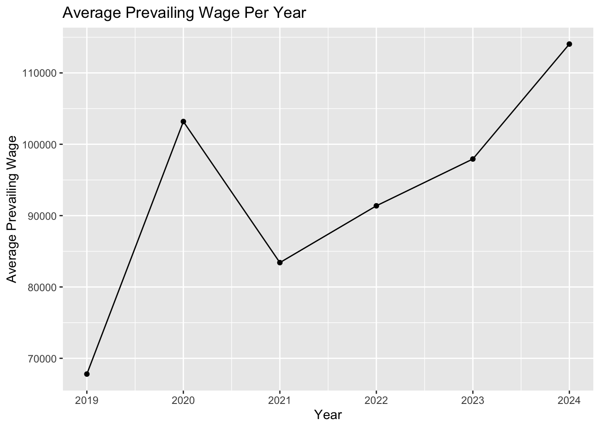

We selected this dataset, updated in 2024, because it comprehensively represents the evolution of U.S. immigration policy from the Trump to the Biden administration. It provides a wealth of columns suitable for statistical modeling. To enrich our analysis, we plan to merge it with two other datasets. The first includes information on the applicants’ universities and majors, while the second contains data on their incomes, allowing us to construct a linear regression model. Once merged, we will have a dataframe with approximately 30+ columns.
This is the line of code of how to read xlsx files and convert into rds. We commented out after done
# rds for the other two projects# df2 <- read_excel("dataset/worksite.xlsx")# saveRDS(df2, "dataset/LCA_worksite.rds")# df3 <- read_excel("dataset/appendix.xlsx")# saveRDS(df3, "dataset/LCA_appendix.rds")
# read in df2df2 <-readRDS("dataset/LCA_worksite.rds")
# read in df3df3 <-readRDS("dataset/appendix.rds")
Merging Process
To merge the dataset together, we can find matching case numbers.
# merge df1 and df2 by case number# merge_1 <- merge(df, df2, by="CASE_NUMBER", all = TRUE)
# final_merge <- merge(merge_1, df3, by="CASE_NUMBER", all = TRUE)
# visualize our new dataset# final_merge
# save as new rds for final_merge# saveRDS(final_merge, "dataset/final_merge.rds")
Data Background
This is the dataset we are combining.. How are you combining them
Start HERE - Import Data
# just load in this datasetfinal_df <-readRDS("dataset/final_merge.rds")head(final_df)
CASE_NUMBER CASE_STATUS RECEIVED_DATE DECISION_DATE
1 I-200-19297-106681 Certified - Withdrawn 2019-10-24 2023-11-01
2 I-200-19319-148860 Certified - Withdrawn 2019-11-15 2023-10-20
3 I-200-19319-148860 Certified - Withdrawn 2019-11-15 2023-10-20
4 I-200-19319-148860 Certified - Withdrawn 2019-11-15 2023-10-20
5 I-200-19319-149308 Certified - Withdrawn 2019-11-15 2023-10-05
6 I-200-19323-154281 Certified - Withdrawn 2019-11-19 2023-10-02
VISA_CLASS JOB_TITLE FULL_TIME_POSITION BEGIN_DATE END_DATE
1 H-1B Research Scientist I Y 2019-10-24 2022-10-23
2 H-1B Software Developer Y 2019-12-01 2022-11-30
3 H-1B Software Developer Y 2019-12-01 2022-11-30
4 H-1B Software Developer Y 2019-12-01 2022-11-30
5 H-1B Software Developer Y 2019-11-18 2022-11-17
6 H-1B SENIOR SOFTWARE ENGINEER Y 2020-05-16 2023-05-15
EMPLOYER_NAME EMPLOYER_STATE AGENT_REPRESENTING_EMPLOYER
1 Georgia Institute of Technology GA No
2 TRISHULLA, LLC WI Yes
3 TRISHULLA, LLC WI Yes
4 TRISHULLA, LLC WI Yes
5 INTERNATIONAL SOFTWARE SYSTEMS INC MD No
6 UBER TECHNOLOGIES, INC. CA Yes
WORKSITE_WORKERS SECONDARY_ENTITY SECONDARY_ENTITY_BUSINESS_NAME
1 1 N <NA>
2 1 Y Acuity Eyecare Group
3 1 N <NA>
4 1 N <NA>
5 1 N <NA>
6 1 N <NA>
WORKSITE_ADDRESS1 WORKSITE_ADDRESS2 WORKSITE_CITY
1 313 Ferst Drive <NA> Atlanta
2 4835 Lyndon B Johnson Fwy, Suite 850 <NA> Dallas
3 6629 UNIVERSITY AVE, SUITE 210 <NA> MIDDLETON
4 8383 Greenway Blvd., Suite 600 <NA> Middleton
5 7337 Hanover Parkway Suite A Greenbelt
6 1455 MARKET STREET 4TH FLOOR SAN FRANCISCO
WORKSITE_COUNTY WORKSITE_STATE WORKSITE_POSTAL_CODE WAGE_RATE_OF_PAY_FROM
1 FULTON GEORGIA 30332 52100
2 DALLAS TEXAS 75244 77605
3 DANE WISCONSIN 53562 77605
4 DANE WISCONSIN 53562 77605
5 PRINCE GEORGE'S MARYLAND 20770 76000
6 SAN FRANCISCO CALIFORNIA 94103 202442
WAGE_RATE_OF_PAY_TO WAGE_UNIT_OF_PAY PREVAILING_WAGE PW_UNIT_OF_PAY
1 NA Year 46821 Year
2 77700 Year 77605 Year
3 77700 Year 65458 Year
4 77700 Year 65458 Year
5 NA Year 75712 Year
6 NA Year 168958 Year
PW_TRACKING_NUMBER PW_WAGE_LEVEL PW_OES_YEAR PW_OTHER_SOURCE
1 <NA> I 7/1/2019 - 6/30/2020 <NA>
2 <NA> I 7/1/2019 - 6/30/2020 <NA>
3 <NA> I 7/1/2019 - 6/30/2020 <NA>
4 <NA> I 7/1/2019 - 6/30/2020 <NA>
5 <NA> I 7/1/2019 - 6/30/2020 <NA>
6 <NA> IV 7/1/2019 - 6/30/2020 <NA>
PW_OTHER_YEAR PW_SURVEY_PUBLISHER PW_SURVEY_NAME APPX_A_NO_OF_EXEMPT_WORKERS
1 NA <NA> <NA> NA
2 NA <NA> <NA> NA
3 NA <NA> <NA> NA
4 NA <NA> <NA> NA
5 NA <NA> <NA> NA
6 NA <NA> <NA> NA
APPX_A_NAME_OF_INSTITUTION APPX_A_FIELD_OF_STUDY APPX_A_DATE_OF_DEGREE
1 <NA> <NA> <NA>
2 <NA> <NA> <NA>
3 <NA> <NA> <NA>
4 <NA> <NA> <NA>
5 <NA> <NA> <NA>
6 <NA> <NA> <NA>
Exploration Data Analysis
# extract year from datefinal_df$YEAR_RECEIVED =as.integer(substr(final_df$RECEIVED_DATE, 1, 4))final_df$MONTH_RECEIVED =month(final_df$RECEIVED_DATE)final_df$DAY_RECEIVED =day(final_df$RECEIVED_DATE)
What are some most common jobs titles, industries, or the duration of employment contracts.
# filter the dataset which jobs have most frequency and applicant get full time positionfiltered_data <- final_df |>filter(FULL_TIME_POSITION =="Y") |>count(JOB_TITLE, sort =TRUE) |>top_n(5)
This is the most frequent job titles appear in the dataset. From this result, we can see that tech related jobs are still the highest percentage of strong hire in United States.
# filter the dataset which jobs have most frequency and applicant get full time positionfiltered_data <- final_df |>count(EMPLOYER_NAME, sort =TRUE) |>top_n(5)
Selecting by n
print(filtered_data)
EMPLOYER_NAME n
1 Amazon.com Services LLC 3259
2 Ernst & Young U.S. LLP 2610
3 Google LLC 2325
4 Microsoft Corporation 2190
5 COGNIZANT TECHNOLOGY SOLUTIONS US CORP 1639
Big companies has always mass hire workers since they have more budget. It is no surprise to see Amazon to be at top.
case status
case_df <- final_df %>%count(CASE_STATUS) %>%mutate(percent = n /sum(n) *100)ggplot(case_df, aes(x = CASE_STATUS, y = percent, fill = CASE_STATUS)) +geom_col() +geom_text(aes(label =sprintf("%.1f%%", percent)), position =position_stack(vjust =0.5), hjust =1) +labs(fill ="Case Status", title ="Distribution of CASE_STATUS")

Looking at the plot, it might not be suitable to build a classifier to predict labels since it is high imbalance. What does each label mean?
When application is certified, it allows the employer to proceed with next steps of the visa process, which include petitioning U.S. Citizenship and Immigration Services (USCIS) for a visa on behalf of the foreign worker.
We also notice a 9% certified - withdrawn. In other word, this is saying the application is approved but employer chose to withdraw it before foreign worker began employment. This can happen due to several reason.
case_df <- final_df %>%count(FULL_TIME_POSITION) %>%mutate(percent = n /sum(n) *100)ggplot(case_df, aes(x = FULL_TIME_POSITION, y = percent, fill = FULL_TIME_POSITION)) +geom_col() +geom_text(aes(label =sprintf("%.1f%%", percent)), position =position_stack(vjust =0.5), hjust =1) +labs(fill ="FULL_TIME_POSITION", title ="Distribution of FULL_TIME_POSITION")

Again, we see that highly imbalance target labels. Remember that employers who are seeking to hire foreign workers must submit various forms of applications. Those candidates who received full time positions from employers are considered strong candidates which is why employers are willing to submit applications to OFLC.
# Identify states with high number of applicants or high approval ratesstate_df <- final_dfstate_df <-na.omit(state_df[c("EMPLOYER_STATE", "CASE_STATUS")])state_data <- state_df |>group_by(EMPLOYER_STATE) |>summarise(Total_Applications =n(),Approved_Applications =sum(CASE_STATUS =="Approved") )
# Sort by total applicationsstate_data_sorted_applicants <- state_data %>%arrange(desc(Total_Applications))top_states <- state_data_sorted_applicants |>top_n(20, Total_Applications)
# visualizing# Plot for Total Applicationsggplot(top_states, aes(x =reorder(EMPLOYER_STATE, -Total_Applications), y = Total_Applications)) +geom_bar(stat ="identity", fill ="GREY") +theme(axis.text.y =element_text(size =6)) +# Smaller text size for stateslabs(title ="Total Visa Applications by State", x ="State", y ="Number of Applications") +coord_flip() # Flips the coordinates to make labels readable

Top 20 states where received the highest number of applications. Now you know what states to look for jobs.
# mydata=PERM_Disclosure_Data_FY2018_EOY# Set seed for reproducibility# set.seed(123)# Sample 1% of the data# mydata <- mydata[sample(nrow(mydata), size = 0.01 * nrow(mydata)), ]# status_counts <- mydata %>% count(CASE_STATUS)# ggplot(status_counts, aes(x = "", y = n, fill = CASE_STATUS)) +# geom_bar(width = 1, stat = "identity") +# coord_polar(theta = "y") +# theme_void() +# labs(fill = "Case Status", title = "Distribution of CASE_STATUS")
# lm_result <- lm(data_dif ~ PW_AMOUNT_9089, data = mydata)# summary(lm_result)
Clustering Analysis
We can make use of various clustering techniques to group similar applicants together.
ggplot(filtered_df, aes(x = WAGE_RATE_OF_PAY_FROM, y = PREVAILING_WAGE)) +geom_point(aes(color = cluster)) +# facet_wrap(~ cluster) +theme_minimal() +labs(title ="Wage Rate vs. Prevailing Wage by Cluster") +scale_x_log10() +scale_y_log10()

Observation and Limitation
WAGE_RATE_OF_PAY_FROM is the minimum wage pay at the worksite,
PREVAILING_WAGE is the average wage paid to similar employed workers in the field
Looking at the result of KMeans with only two numerical columns, it was not necessary to make use of Kmeans because is obvious to notice a linear relationship. There’s a positive correlation between these two features. It is expected that employers are pay more at the worksite than prevailng wages.
For example, applicants who are highly specialized / high demand positions mostly lie in cluster 4.
To recall, one limitation of this KMeans is the choice of cluster, k, and limited numerical columns to work with.
yearly_wage <- final_df %>%group_by(YEAR_BEGIN) %>%summarise(Avg_Prevailing_Wage =mean(PREVAILING_WAGE, na.rm =TRUE))ggplot(yearly_wage, aes(x = YEAR_BEGIN, y = Avg_Prevailing_Wage)) +geom_line() +# Use a line plot to show trends over timegeom_point() +# Add points to highlight each year's average wagelabs(title ="Average Prevailing Wage Per Year",x ="Year",y ="Average Prevailing Wage")

we see a sharp drop in year 2021 due to COVID-19.
What’s Next
Build on Logistic Regression
This time with more features/columns, we can build a better logistic regression model to predict approved or denial